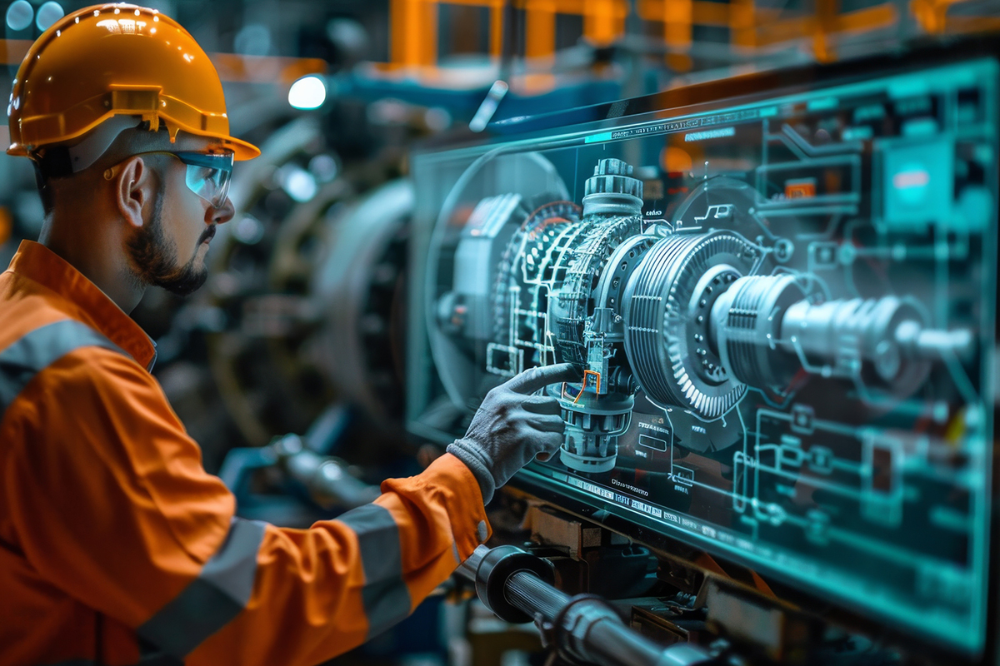
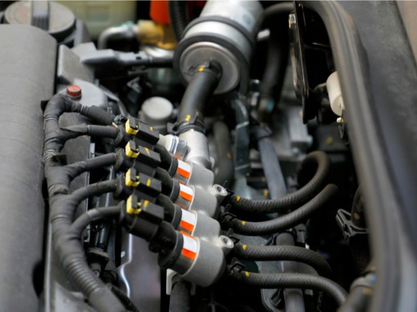
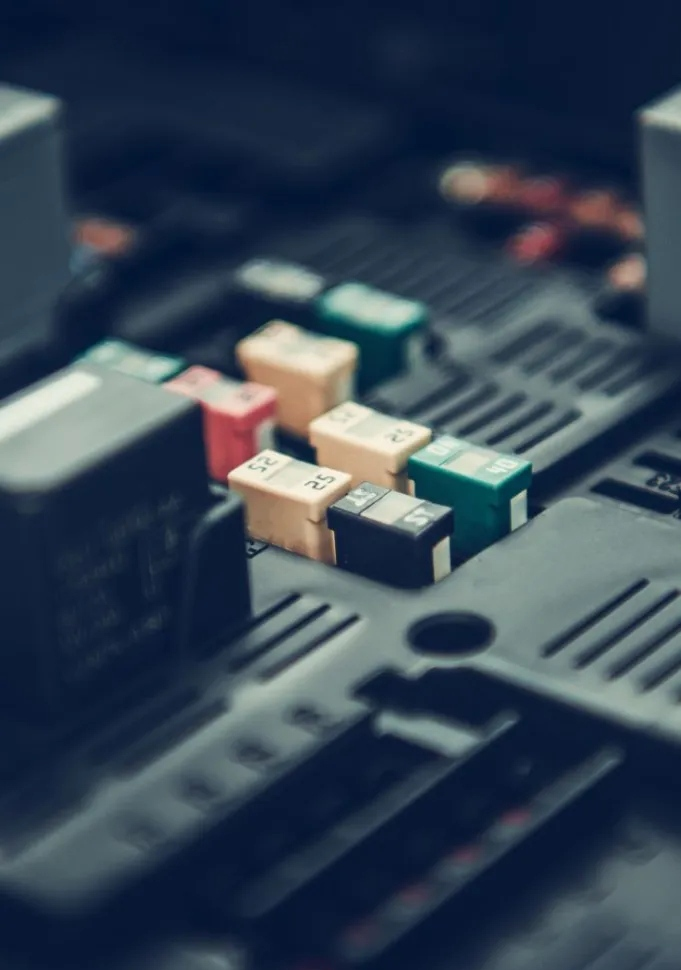

هندسة القوى والأدوات الكهربائية

الشرح والأهمية: يهتم هذا التخصص بدراسة محركات القوى، والأدوات الميكانيكية والكهربائية المتقدمة. تكمن أهميته في تشغيل وتطوير المعدات الثقيلة والصناعية وتحسين أدائها الميكانيكي والكهربائي.
نظام وقود بنزين

الشرح والأهمية: يختص هذا التخصص بالتعامل مع أنظمة حقن الوقود الحديثة (البخاخات)، وطرق فحصها وتصفية الوقود لرفع كفاءة الاحتراق. وتكمن أهميته في تقليل استهلاك الوقود والانبعاثات وتوفير أقصى قدر من القوة للآلات والمركبات.
الأنظمة الكهربائية والإلكترونية

الشرح والأهمية: يعنى هذا التخصص بفحص وبرمجة الدوائر الإلكترونية والكمبيوترات المدمجة بالمحركات والأنظمة الميكانيكية الحديثة. وتكمن أهميته في كشف الأعطال الدقيقة بالكمبيوتر والتعامل مع أحدث التقنيات الذكية.